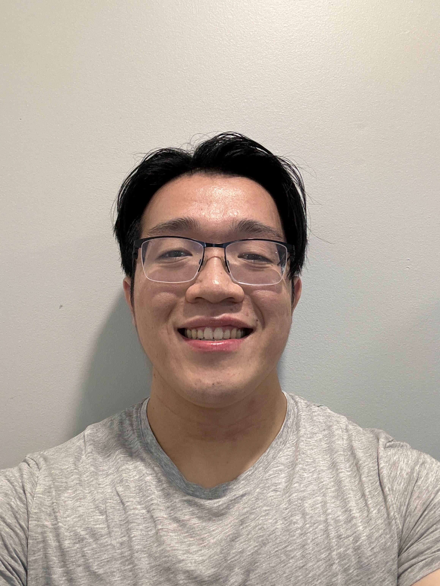
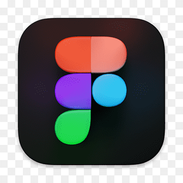

About Me
Hello! I'm Eric Li, a computing science major currently studying at Simon Fraser University. I love technology, problem-solving and working by myself or with others to create innovative solutions. Over the years, I've developed a strong foundation in programming, web and UX design, front-end development, presentation skills, collaborating with others, working with real-world problems, understanding real user needs and challenges, and more. I have gained experience in a variety of programming, presentation, teamwork, and design languages, tools, frameworks, and skills, and I am always eager to continue improving.
Outside of coding and schooling, I'm an artistic and adventurous person who is always looking to enjoy life to the fullest. I love being outdoors, travelling, exploring new cultures and places, and spending time with my friends and loved ones. I'm also a massive sports and fitness enthusiast, as well as a massive history aficionado, particularly ancient Greek history. I consider myself a person with an artistic temperment, and I love to read, watch movies and TV, listen to music, appreciate photography, and writing.
In any facet of my life, I'm always lookign to learn new things, meet new people, and experience new things. I'm always looking to grow, improve, and become the best version of myself that I can be. Thank you for visiting my site!
Projects and Skills
-
C
-
C++
-
HTML
-
CSS
-
Javascript
-
React
-
Git/GitHub
-  Figma
- Balsamiq
- Adobe Photoshop, Premiere, XD, Acrobat
- Excel
Skills: Algorithims, Systems and Object-Oriented Programming, Front-End Development, UX Design, Wireframing, Prototyping, User Research, Version Control, Data Management, Presentation Skills
Project: Textiles Again
- Collaborated with a small team with the goal of creating a viable solution to the environmental harm caused by textile waste
- Conducted comprehensive topic and user research through in-person and online interviews, observations, and secondary research to gather user stories and insight on user needs, behaviors, and challenges
- Developed wireframes and prototypes for a website application, incorporating feedback from real people to enhance usability, meet user needs, and provide a solution to their problems
- Created and delivered a presentation detailing the real-world problem we aim to solve, and showcasing our design process, research findings, and our proposed final design to an audience of judges
Current Project: Project Management Hub
- Project manager for a small team creating a web application with APIs designed to facilitate team communication and coordination through the focal point of an intuitive and clear calendar
- Conducted comprehensive topic and user research through user stories and personas to define and understand user requirements
- Organized, created, recorded, and edited video presentations to effectively communicate our topic overview, goals, processes, project analysis, user stories, medium-fidelity prototypes, and data flow of application
- Performed quality reviews to ensure project standards are met and team members are contributing fairly
- Managed team coordination, task distribution, time management, personal accomodations, and overall project workflow
Work and Volunteer Experience
Honest Renovations: Renovation Specialist (2019 - Present)
- Assisted in the renovation of homes and buildings, both indoors and outdoors
- Wide range of tasks including: painting, flooring, tiling, plumbing, trim and crown moulding, door and window installation, client communication, interpretation, and translation, roofing, site cleaning, and general repairs
- Worked with a team to complete projects on time and on budget
- Developed strong communication and teamwork skills, comfortability in unpleasant and dangerous scenarios, ability to deal with pressure, knowhow in working with a variety of different clients and work environments, physical and mental endurance, familiarity with a variety of tools and the handling of specialized equipment, and much more
Templeton Secondary School: Library Monitor (2018 - 2020)
- Assisted in the organization and maintenance of the school library
- Checked books in and out, shelved books, spot-checks around the library to ensure quality standards are met, organized and cleaned the library, helped students and teachers find books, maintained upkeep of front desk, set up and prepared for school events and presentations, and general assistance with the running of the library
- Developed strong organizational, communication, and teamwork skills, as well as the ability to work with a variety of different people and in different environments
Kiwassa After-School Program Supervisor (2020)
- Supervised and assisted in the running of an after-school program for elementary school students
- Assisted in the planning and execution of activities, games, and events for the students
- Helped students with homework, reading, and other academic tasks
- Developed strong leadership, communication, and teamwork skills, as well as the ability to work with children and in a fast-paced environment
Education
Templeton Secondary School
- Dogwood Diploma
- Graduated: 2020
- Templeton's VSB Website
 Simon Fraser University
Simon Fraser University
- Bachelor of Science in Computing Science
- Expected Graduation: 2026
- SFU Website
Hobbies and Passions
- Soccer
- Hiking
- Running
- Weightlifting
- MMA
- Swimming
- Yoga
Fitness
- Reading
- Fiction & Non Fiction
- My Goodreads Page
- Writing
- My own novel
- Movies and TV
- Music
- Photography
- Nature and Vistas
Art and Culture
- Languages
- Spanish
- Instruments
- Guitar
- History
- Ancient Greece
- Travel
- Dream Destinations: Italy & Greece
- Exploring
- Trying New Foods
Life and Learning